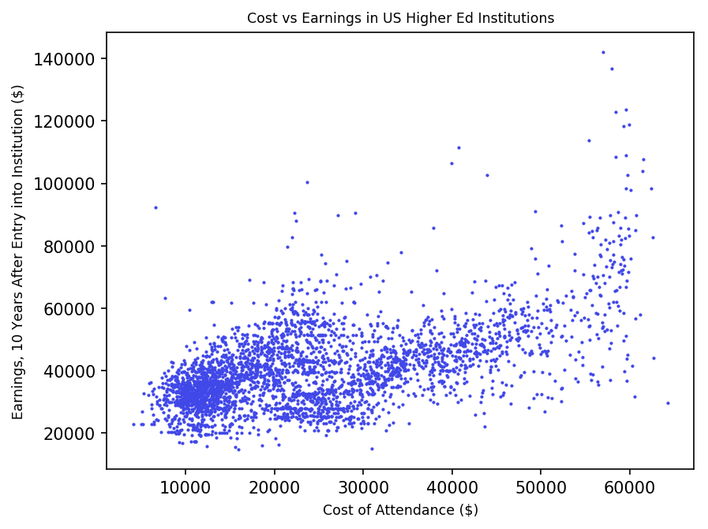

As a soon-to-be college freshman (hopefully!), I've been spending a fair share of my time scouring university websites, scanning colorful pamphlets, and making big decisions. When I stumbled upon the US College Scorecard, I knew I had found my goldmine. This data, collected and compiled by the US Department of Education, is an extremely comprehensive and well-documented dataset freely available to the public. It contains information on colleges, their student body, cost of attendance, financial aid, and earnings after graduation.
At first I tried to work through the raw downloaded data, but it became evident very quickly that this was too big of a dataset to handle. Luckily, an API is also provided, which can return only the results of specific queries. This API returns only a hundred data points per query. Below is a scatterplot I made, with the top 100 data points sorted by descending earnings after graduation, using D3.
D3 is SVG-based, so performance is directly proportional to the number of elements (and in this case, data points) generated. This means that in order to harness the full potential of this dataset, I had to change my method. I decided to try working with Pandas, a data-handling library for Python.
import pandas as pd
from pandas.io.json import json_normalize as jn
import requests
import json
import math
import matplotlib.pyplot as plt
#get data through API in order to compute the number of iterations necessary
url = "https://api.data.gov/ed/collegescorecard/v1/schools.json?api_key=3hZTlIbHmdMRcRWJ3NxdG8AvQPoW4Mdbilkm13At&school.operating=1&_sort=2013.earnings.10_yrs_after_entry.working_not_enrolled.mean_earnings:desc&_per_page=1&_page= %s &2013.earnings.10_yrs_after_entry.working_not_enrolled.mean_earnings__range=0..&2013.cost.attendance.academic_year__range=0..&fields=school.name"%(0)
print("retrieving data count...")
j = json.loads(requests.get(url).text)
count = int(math.ceil(j["metadata"]["total"]/100))
#loop through the same API request, incrementing page number each time
sc = []
for x in range(0,count):
url = "https://api.data.gov/ed/collegescorecard/v1/schools.json?api_key=3hZTlIbHmdMRcRWJ3NxdG8AvQPoW4Mdbilkm13At&school.operating=1&_sort=2013.earnings.10_yrs_after_entry.working_not_enrolled.mean_earnings:desc&_per_page=100&_page= %s &2013.earnings.10_yrs_after_entry.working_not_enrolled.mean_earnings__range=0..&2013.cost.attendance.academic_year__range=0..&fields=school.name,2013.earnings.10_yrs_after_entry.working_not_enrolled.mean_earnings,2013.cost.attendance.academic_year,2013.admissions.admission_rate.overall,2013.admissions.sat_scores.average.overall,2013.aid.median_debt.number.overall,2013.student.retention_rate.four_year.full_time"%(x)
print("retrieving data points %s to %s..."%(x*100,(x*100)+100))
j = json.loads(requests.get(url).text)
df = jn(j,"results")
sc.append(df)
#concatenate each retreived dataset into a single Pandas DataFrame and save to file
sc = pd.concat(sc, axis=0)
print("reassigning index...")
sc.reset_index(inplace=True)
sc.to_pickle("data.pkl")
print("saved to file!")
The above script retrieves all of the data from the API and saves it into an external file. Next, I took this data and made a picture with matplotlib.
Statsmodels has a handy OLS (ordinary least squares) regression calculator, so it told me the R-squared value, 84.9%. This value, coupled with the clearly exponential shape of the scatterplot, led me to believe that the data needed to be re-expressed to fit a linear regression.
OLS Regression Results
==============================================================================
Dep. Variable: cost R-squared: 0.849
Model: OLS Adj. R-squared: 0.849
Method: Least Squares F-statistic: 1.908e+04
Date: Sun, 22 Oct 2017 Prob (F-statistic): 0.00
Time: 12:00:41 Log-Likelihood: -36217.
No. Observations: 3384 AIC: 7.244e+04
Df Residuals: 3383 BIC: 7.244e+04
Df Model: 1
Covariance Type: nonrobust
==============================================================================
coef std err t P>|t| [0.025 0.975]
------------------------------------------------------------------------------
earnings 0.6017 0.004 138.131 0.000 0.593 0.610
==============================================================================
Omnibus: 120.566 Durbin-Watson: 1.770
Prob(Omnibus): 0.000 Jarque-Bera (JB): 133.290
Skew: 0.486 Prob(JB): 1.14e-29
Kurtosis: 2.967 Cond. No. 1.00
==============================================================================